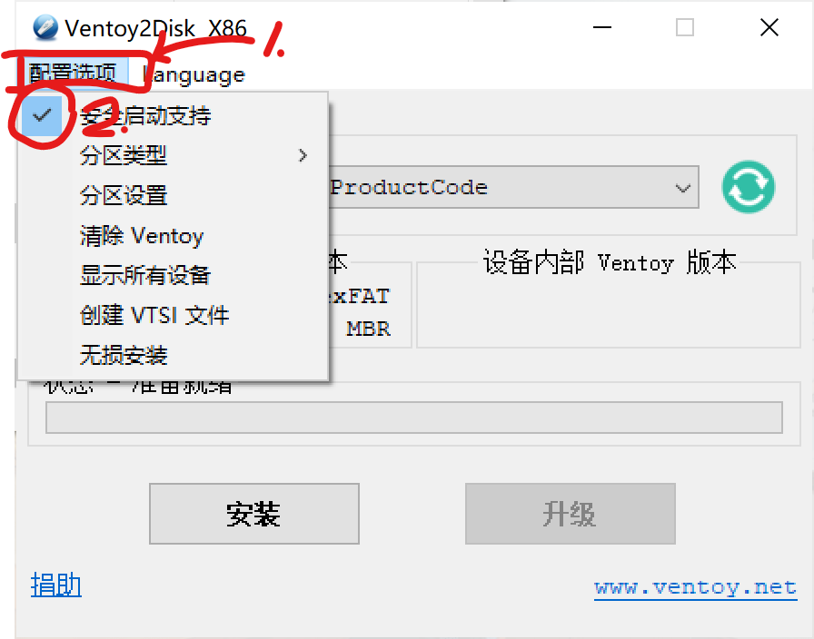
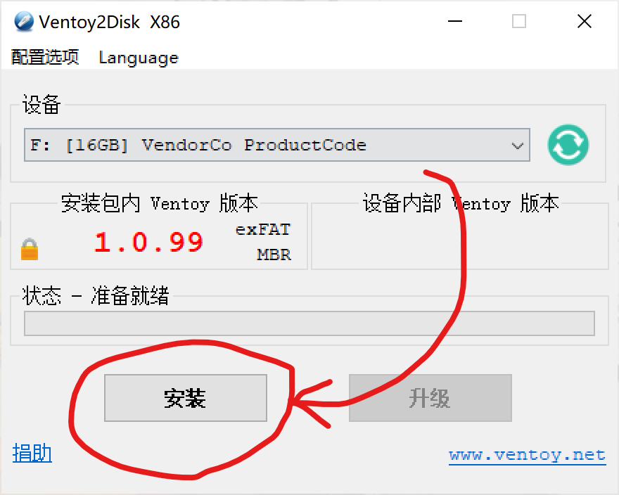
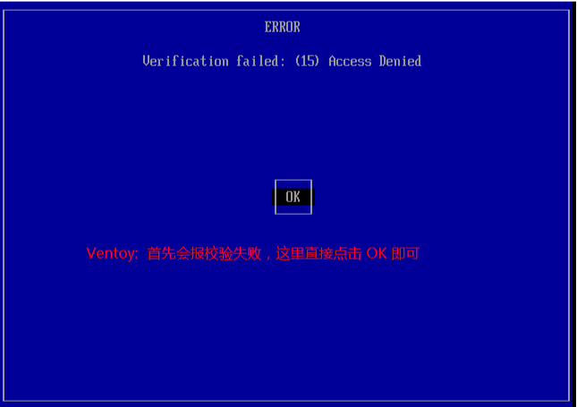
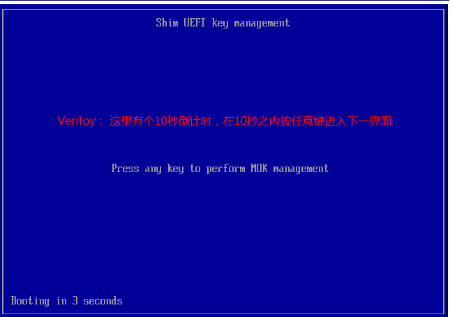
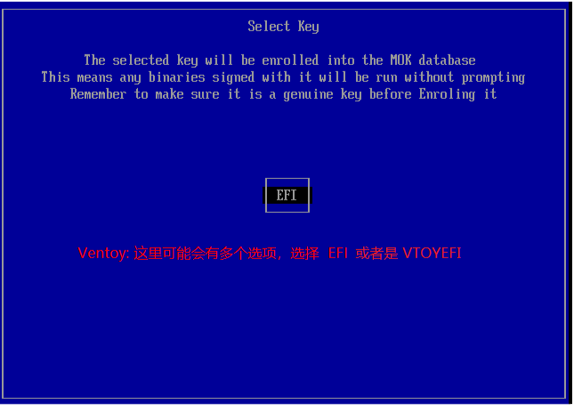
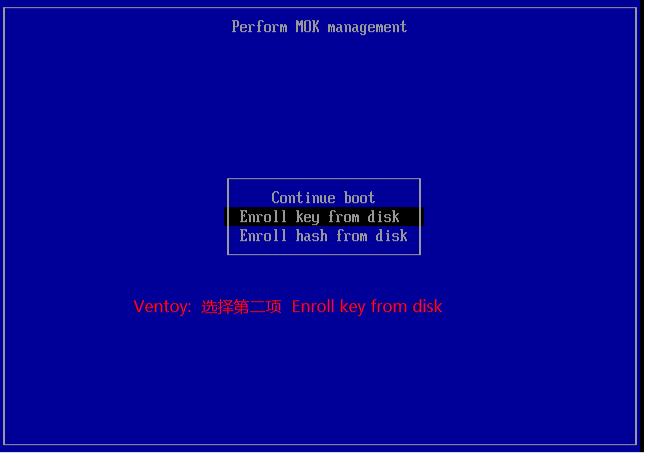
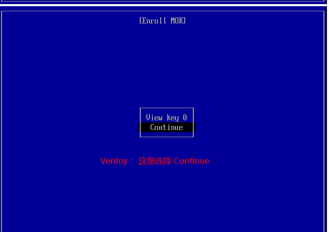
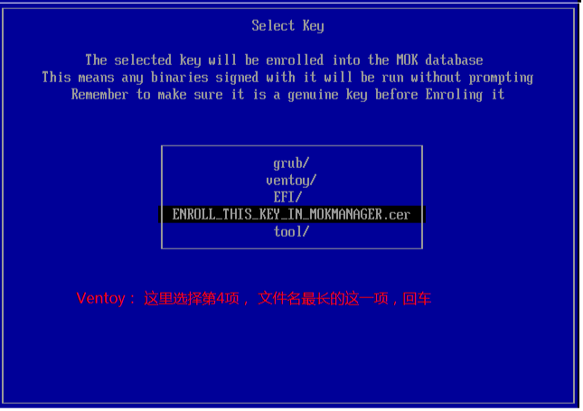
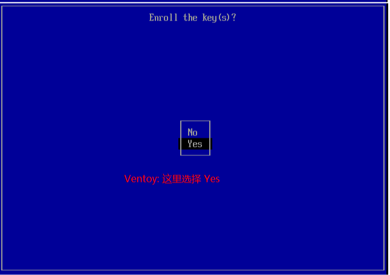
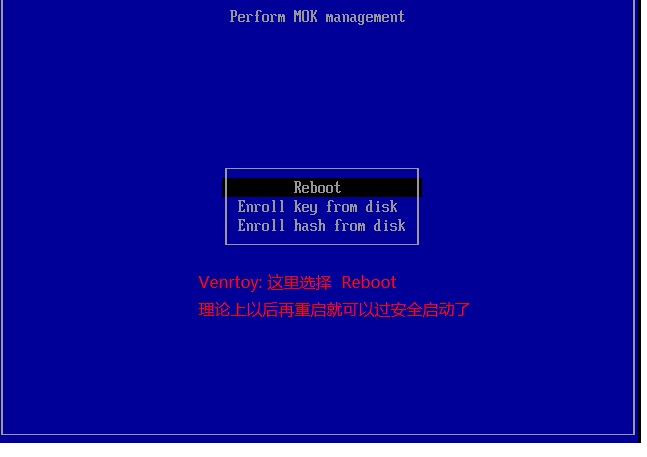

装系统教程
开篇提示
- 文章的所有软件链接都已经贴到了文章末尾，别在网上搜!!!
- 软件建议保存到电脑里
前篇
BIOS启动(老电脑):
- 用Ventoy，你会回来感谢我的。
- 如果只用linux系统的话，BalenaEtcher也是不错的选择，不过经常报错。
- 其他的不介绍
- 文章的‘烧录’部分会统一介绍Ventoy用法!!!
UEFI启动(较新的电脑)
- UEFI用Ventoy稍微困难一点。
- 如果只用linux系统的话，BalenaEtcher也是不错的选择，不过经常报错。
- 其他的不介绍
- 文章的‘烧录’部分会统一介绍Ventoy用法!!!
镜像
- 下载器推荐BitComet，一个字：快！
- 镜像网站：Windows推荐用： https://next.itellyou.cn/
- Linux找镜像网站（这里的链接是清华源）或者官网，推荐下面几个系统：
- UBUNTU： https://mirrors.tuna.tsinghua.edu.cn/ubuntu-releases/
- DEBIAN： https://mirrors.tuna.tsinghua.edu.cn/debian-cd/
- DEEPIN： https://mirrors.tuna.tsinghua.edu.cn/deepin-cd/
- 下载的镜像一般是.iso格式
烧录
最最最重要的一步，千万仔细！！！统一以Ventoy为例
- 首先打开Ventoy2Disk.exe，插入你的U盘（8G或以上），然后点击‘配置选项’，如果你用UEFI把‘安全启动支持’的对勾勾上！！！（BIOS请忽略这步）
- 完成后点击‘安装’
- Tips:U盘里有重要文件的先备份，这步是格式化！！！
Ventoy安装步骤

图1: Ventoy配置选项

图2: Ventoy安装
- 等进度条跑完后打开你的U盘，放入系统镜像(.iso)
- 关机，不同主板进系统选择界面的方式不同，基本在F11，F12和Delete之间，每个键每次选一个按开机键后狂按，总会试到的。选择你的U盘后
- 要是UEFI的话，你就会发现：进不了！解决方法(BIOS请忽略这步)。网图，若有侵权，请联系删除：
UEFI启动解决方法

图3: 验证失败，点击OK

图4: 按任意键进入MOK管理

图5: 选择EFI或VTOYEFI

图6: 选择第二项（在硬盘选择）

图7: 选择Continue

图8: 选择EFI密钥

图9: 选择Yes

图10: 选择Reboot
- 图片流程只需要一遍，以后就不用设置了
- 进入Ventoy之后选择系统，按两下回车就可以了
BIOS
一样的步骤，关机后直接就可以进去了。
软件链接
- @Ventoy烧录工具： https://www.ventoy.net/cn/download.html
- Bitcomet下载器： https://pan.huang1111.cn/s/4RKa3Tg（提取码：zyh01）
- BalenaEtcher烧录器： https://pan.huang1111.cn/s/A61vvCB（提取码：zyh02）